Coding Crumbs
Paged maintained by Sienna Blanche
24 June 2025
These are coding vignettes that have been presented at SCORE
Session 1 - January 27th 2025
Naming
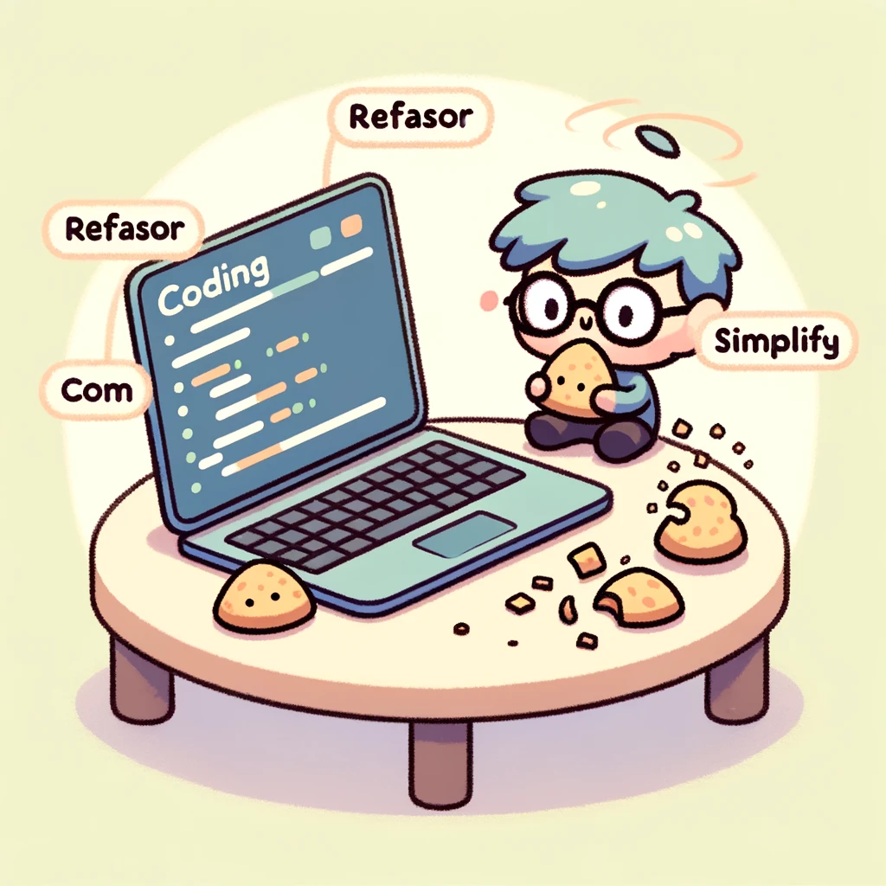
Who has code that looks like this?
df2
df.2
df_2
Df_2
DF_2
Type Cases
Great Article on Type Cases -> https://www.alexhyett.com/snake-case-vs-camel-case-vs-pascal-case-vs-kebab-case/
Each of these names has a different name
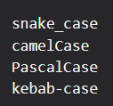
Names Matter!
Increadible important for R -> Case Sensative
Also increadible important to be consistent when collaborating on code
What is Consensus in the Community?
https://stackoverflow.com/questions/1944910/what-is-your-preferred-style-for-naming-variables-in-r
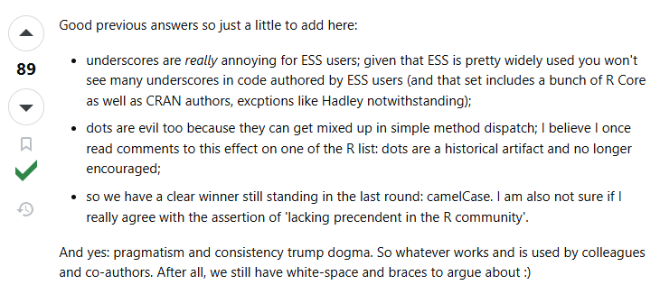
What am I going to do?
I’m trying to consistently use PascalCase for my objects in R.
Take Home
While you have a lot of flexibility in naming objects in R, I’d encourage you to be more intentional and consistent with how you decide to name your objects.
Session 2 - February 24th 2025
Clean Code
Who has code that looks like this?
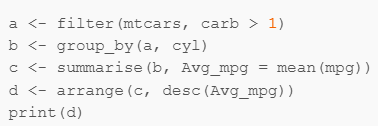
That’s called the Multiple Object Option
There is also the Nested Option
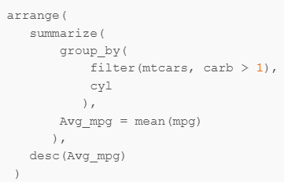
Or…the Piping Option
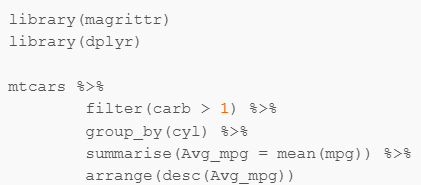
Piping

Great Article on Type Piping -> https://uc-r.github.io/pipe
Reference to magrittr package -> https://magrittr.tidyverse.org/
Piping verbage
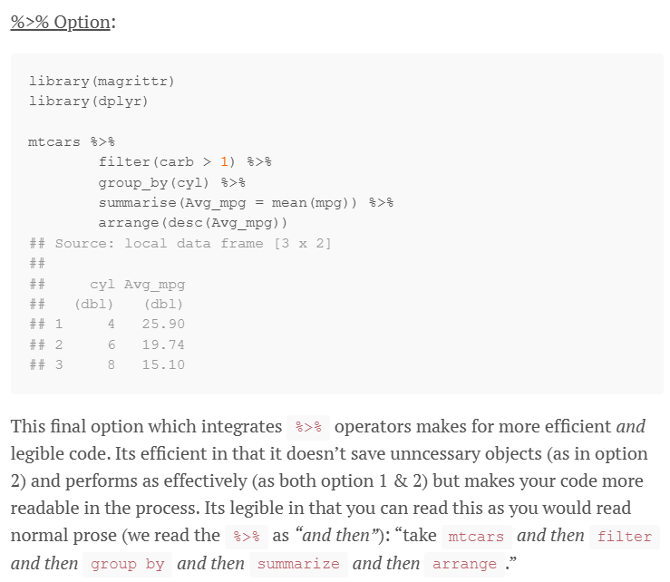
Feed into Plots
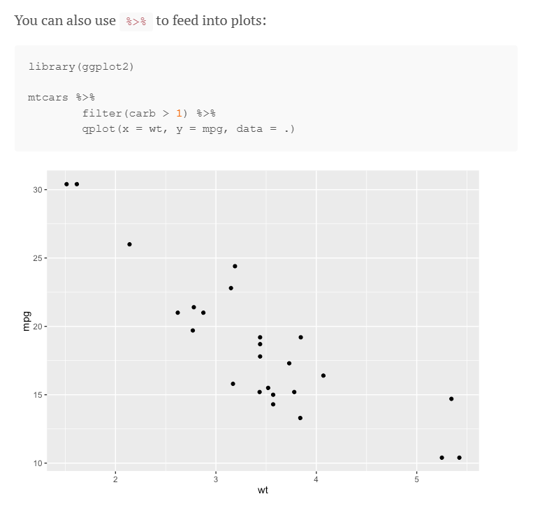
Integration into other packages
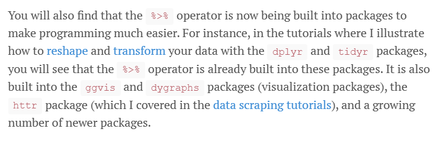
Special Cases
%T>%
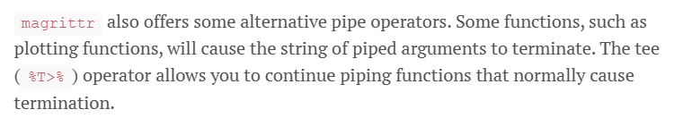
%<>%
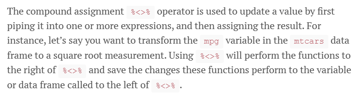
%$%
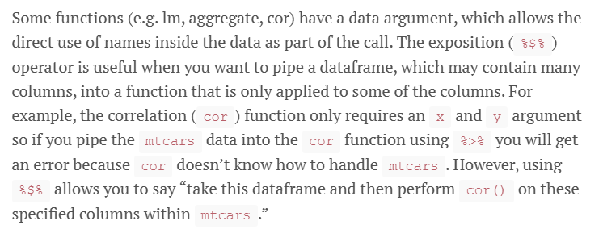
Take Home
Piping is a great way to clean up your code and make it more readable!
Practically: I usually write code as multiple objects and then convert to piping.
Session 3 - March 31st 2025
R styling
And I LOVE clean code
Confession: I write ugly code
There is Help
Clean legible code is important for reproducibility
Hadley Wickham’s Style Guide
Option 1: Native R
Code > Reformat Code (Ctrl+Shift+A)
Before
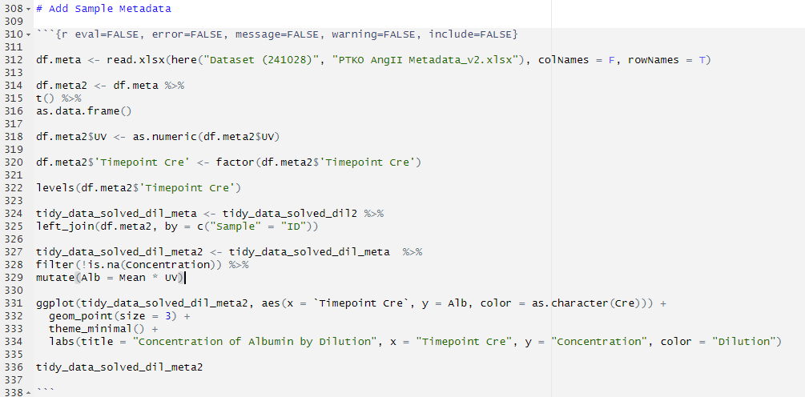
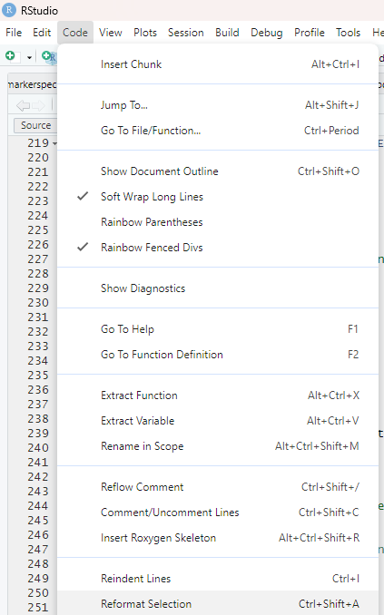
After
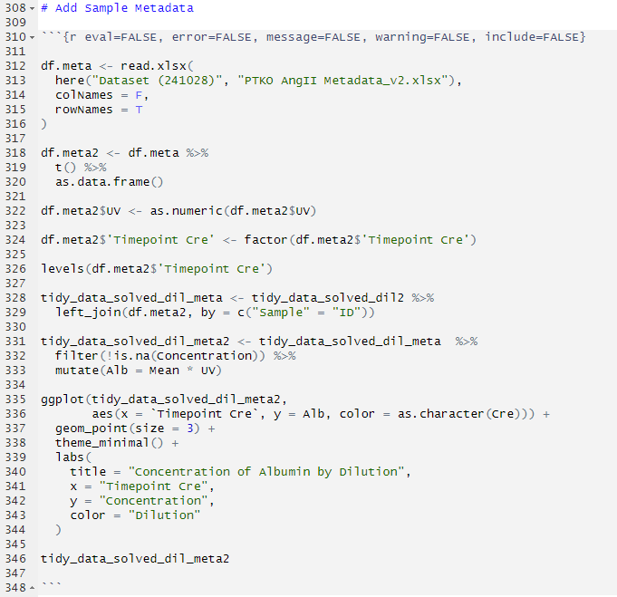
Option 2: Styler Package

https://github.com/r-lib/styler?tab=readme-ov-file
install.packages(“styler”)
https://www.youtube.com/watch?app=desktop&v=yUA3NpJLH6I&t=220s&t=156
Before
After
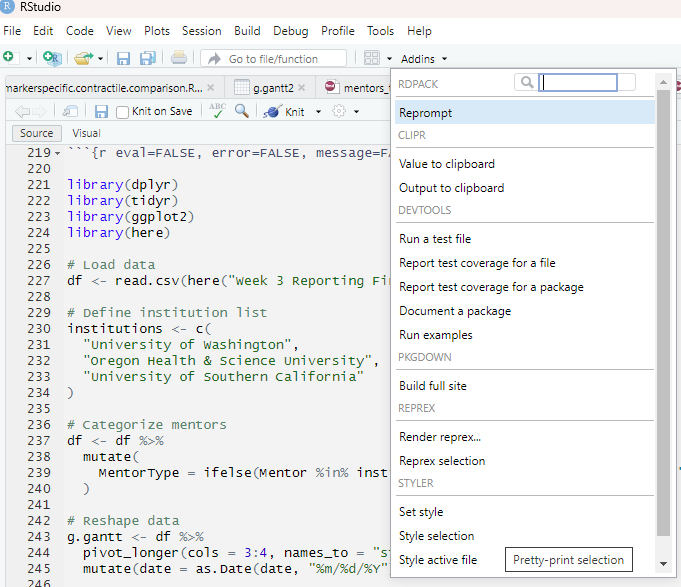
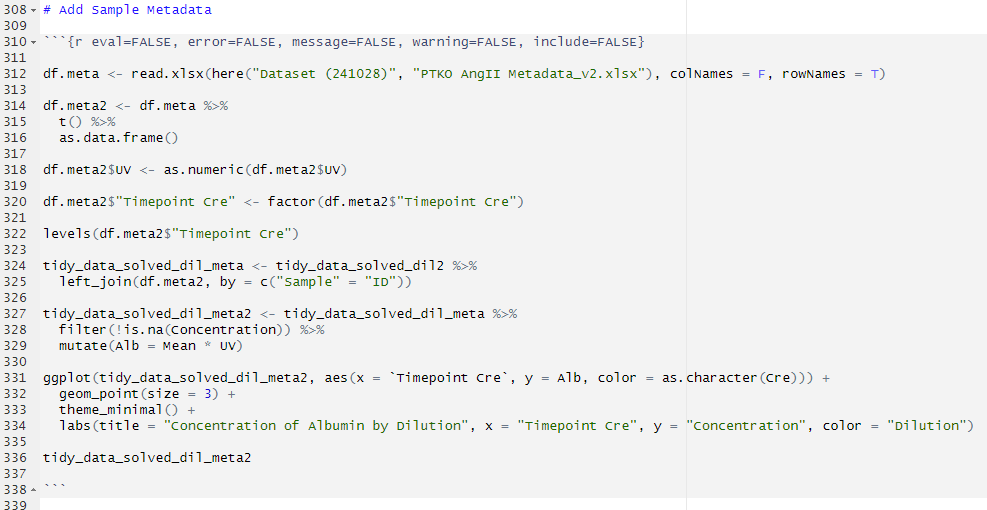
Option 3: ChatGPT
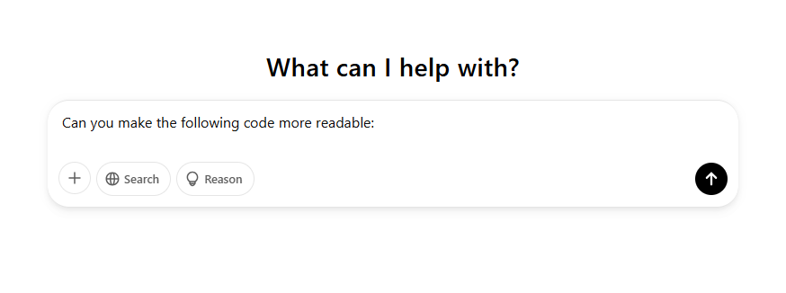
Before
After
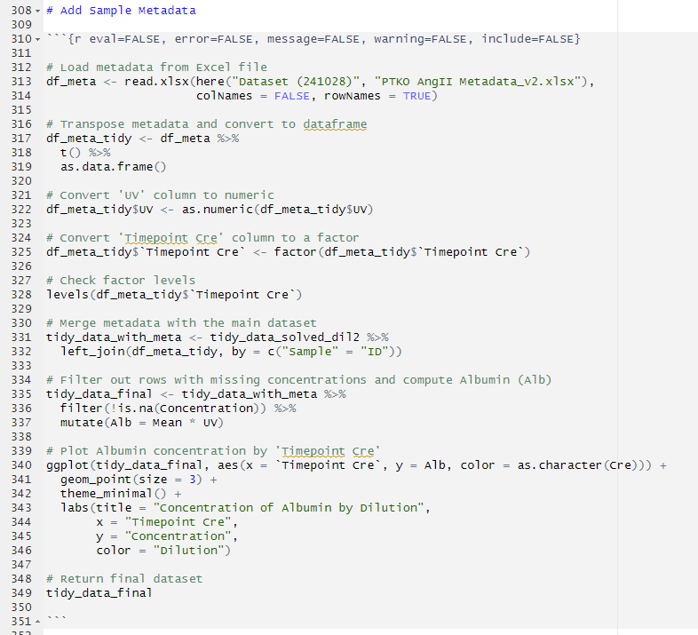
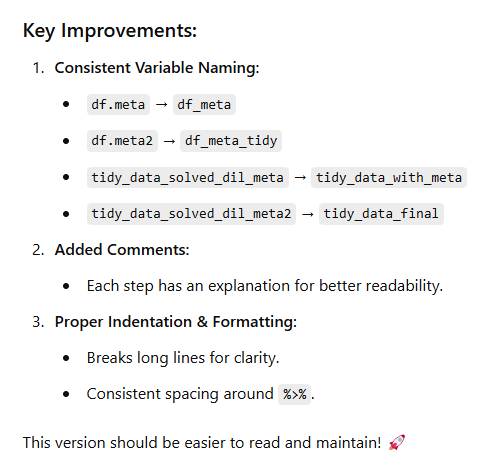
Take Home
Styling your code is important
But spend your time thinking about the logic of your code
Styler is a great tool to help with minimal effort
ChatGPT is also a great tool to help
I’m going to try to run my code through chatGPT before publishing it
Session 4 - April 28th 2025
Gene Conversion
Changing between Mouse and Human gene names is common maneuver
Why?
Translational Research
Target Identification for Therapies
Pathway and Functional Annotation
It’s a Challenge
Gene Duplications
Unique Names
Approaches I’ve used before
Packages
geneName
ChatGPT
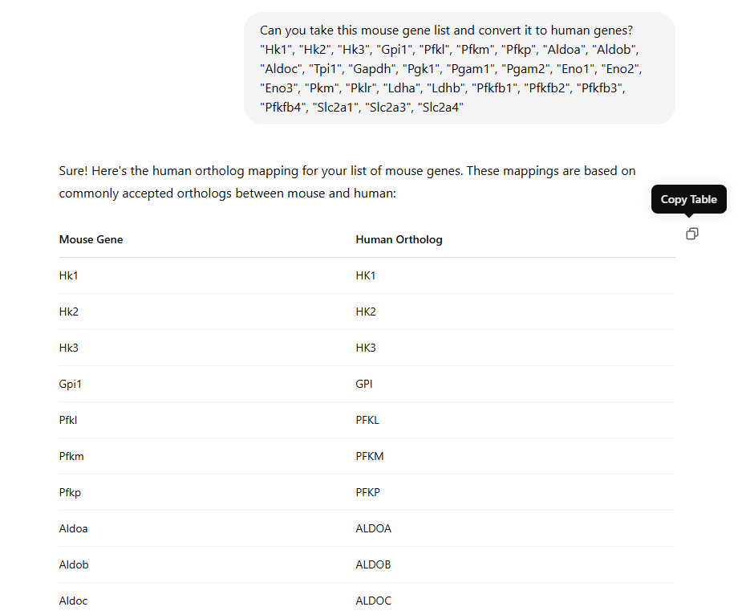
Use at your own risk.
Quick…but unreliable
Functions
https://www.biostars.org/p/9567892/
Human -> Mouse
convert_human_to_mouse <- function(gene_list) {
output = c()
mouse_human_genes = read.csv("https://www.informatics.jax.org/downloads/reports/HOM_MouseHumanSequence.rpt",sep="\t")
for(gene in gene_list) {
class_key = (mouse_human_genes %>% filter(Symbol == gene & Common.Organism.Name == "human"))[['DB.Class.Key']]
if( !identical(class_key, integer(0)) ) {
human_genes = (mouse_human_genes %>% filter(DB.Class.Key == class_key & Common.Organism.Name=="mouse, laboratory"))[,"Symbol"]
for(human_gene in human_genes) {
output = rbind(c(gene, human_gene), output)
}
}
}
return (output)
}
df_mouse_gene <- convert_human_to_mouse(gene_list)
df_mouse_gene <- as.data.frame(df_mouse_gene)Mouse -> Human
convert_mouse_to_human <- function(gene_list) {
output = c()
mouse_human_genes = read.csv("https://www.informatics.jax.org/downloads/reports/HOM_MouseHumanSequence.rpt",sep="\t")
for(gene in gene_list) {
class_key = (mouse_human_genes %>% filter(Symbol == gene & Common.Organism.Name == "mouse, laboratory"))[['DB.Class.Key']]
if( !identical(class_key, integer(0)) ) {
human_genes = (mouse_human_genes %>% filter(DB.Class.Key == class_key & Common.Organism.Name=="human"))[,"Symbol"]
for(human_gene in human_genes) {
output = rbind(c(gene, human_gene), output)
}
}
}
return (output)
}
df_human_gene <- convert_mouse_to_human(gene_list)
df_human_gene <- as.data.frame(df_human_gene)Take Home
Function is what I use now.
I should probably download the database localy onto my computer
I suspect there are other options.
BioMart?
How do others in the chat do this?
Session 5 - June 30th 2025
Session 6 - July 28th 2025
## R version 4.4.2 (2024-10-31)
## Platform: aarch64-apple-darwin20
## Running under: macOS Sequoia 15.1
##
## Matrix products: default
## BLAS: /Library/Frameworks/R.framework/Versions/4.4-arm64/Resources/lib/libRblas.0.dylib
## LAPACK: /Library/Frameworks/R.framework/Versions/4.4-arm64/Resources/lib/libRlapack.dylib; LAPACK version 3.12.0
##
## locale:
## [1] en_US.UTF-8/en_US.UTF-8/en_US.UTF-8/C/en_US.UTF-8/en_US.UTF-8
##
## time zone: America/Los_Angeles
## tzcode source: internal
##
## attached base packages:
## [1] grid stats graphics grDevices utils datasets methods
## [8] base
##
## other attached packages:
## [1] viridis_0.6.5 viridisLite_0.4.2 gplots_3.2.0 reshape2_1.4.4
## [5] pheatmap_1.0.12 ggvenn_0.1.10 lubridate_1.9.4 forcats_1.0.0
## [9] stringr_1.5.1 purrr_1.0.2 readr_2.1.5 tidyr_1.3.1
## [13] tibble_3.2.1 tidyverse_2.0.0 devtools_2.4.5 usethis_3.1.0
## [17] here_1.0.1 ggpmisc_0.6.1 ggpp_0.5.8-1 ggplot2_3.5.1
## [21] knitr_1.49 patchwork_1.3.0 Seurat_5.3.0 SeuratObject_5.0.2
## [25] sp_2.1-4 dplyr_1.1.4
##
## loaded via a namespace (and not attached):
## [1] RColorBrewer_1.1-3 rstudioapi_0.17.1 jsonlite_1.8.9
## [4] magrittr_2.0.3 spatstat.utils_3.1-2 farver_2.1.2
## [7] rmarkdown_2.29 fs_1.6.5 vctrs_0.6.5
## [10] ROCR_1.0-11 memoise_2.0.1 spatstat.explore_3.3-4
## [13] htmltools_0.5.8.1 polynom_1.4-1 sass_0.4.9
## [16] sctransform_0.4.1 parallelly_1.41.0 KernSmooth_2.23-24
## [19] bslib_0.8.0 htmlwidgets_1.6.4 ica_1.0-3
## [22] plyr_1.8.9 plotly_4.10.4 zoo_1.8-12
## [25] cachem_1.1.0 igraph_2.1.4 mime_0.12
## [28] lifecycle_1.0.4 pkgconfig_2.0.3 Matrix_1.7-1
## [31] R6_2.5.1 fastmap_1.2.0 fitdistrplus_1.2-2
## [34] future_1.34.0 shiny_1.10.0 digest_0.6.37
## [37] colorspace_2.1-1 rprojroot_2.0.4 tensor_1.5
## [40] RSpectra_0.16-2 irlba_2.3.5.1 pkgload_1.4.0
## [43] progressr_0.15.1 timechange_0.3.0 spatstat.sparse_3.1-0
## [46] httr_1.4.7 polyclip_1.10-7 abind_1.4-8
## [49] compiler_4.4.2 remotes_2.5.0 withr_3.0.2
## [52] fastDummies_1.7.5 pkgbuild_1.4.6 MASS_7.3-61
## [55] quantreg_5.99.1 sessioninfo_1.2.2 caTools_1.18.3
## [58] gtools_3.9.5 tools_4.4.2 lmtest_0.9-40
## [61] httpuv_1.6.15 future.apply_1.11.3 goftest_1.2-3
## [64] glue_1.8.0 nlme_3.1-166 promises_1.3.2
## [67] Rtsne_0.17 cluster_2.1.6 generics_0.1.3
## [70] gtable_0.3.6 spatstat.data_3.1-4 tzdb_0.4.0
## [73] hms_1.1.3 data.table_1.16.4 spatstat.geom_3.3-5
## [76] RcppAnnoy_0.0.22 ggrepel_0.9.6 RANN_2.6.2
## [79] pillar_1.10.1 spam_2.11-1 RcppHNSW_0.6.0
## [82] later_1.4.1 splines_4.4.2 lattice_0.22-6
## [85] survival_3.7-0 deldir_2.0-4 SparseM_1.84-2
## [88] tidyselect_1.2.1 miniUI_0.1.1.1 pbapply_1.7-2
## [91] gridExtra_2.3 scattermore_1.2 xfun_0.50
## [94] matrixStats_1.5.0 stringi_1.8.4 lazyeval_0.2.2
## [97] yaml_2.3.10 evaluate_1.0.3 codetools_0.2-20
## [100] cli_3.6.3 uwot_0.2.2 xtable_1.8-4
## [103] reticulate_1.40.0 munsell_0.5.1 jquerylib_0.1.4
## [106] Rcpp_1.0.14 globals_0.16.3 spatstat.random_3.3-2
## [109] png_0.1-8 spatstat.univar_3.1-1 parallel_4.4.2
## [112] MatrixModels_0.5-3 ellipsis_0.3.2 dotCall64_1.2
## [115] profvis_0.4.0 urlchecker_1.0.1 bitops_1.0-9
## [118] listenv_0.9.1 scales_1.3.0 ggridges_0.5.6
## [121] rlang_1.1.5 cowplot_1.1.3